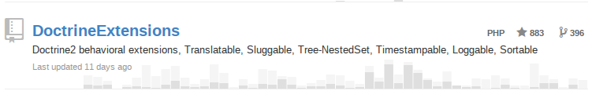
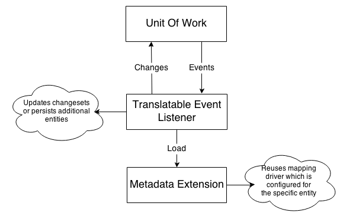
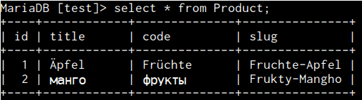
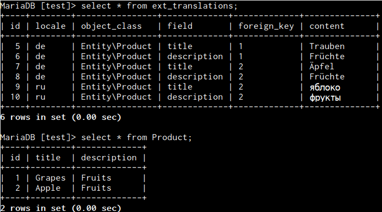
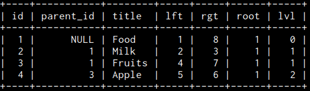

Who's talking?
Gediminas Morkevičius aka @l3pp4rd

- I code with - PHP, Go, JavaScript, C
- I'm an open-source geek - ViM, Arch Linux, DWM user
- And I share my stuff github.com/l3pp4rd

SymfonyCon Warsaw 2013
Increase productivity with Doctrine2 behavioral extensions
Some history
- The initial commit 2010-09-03 MIT licensed
- Maintained ever since
- Purpose - provide common model behaviors
- Derive metadata mapping and caching technics
- Be a framework independent library
An example
<?php
namespace Entity;
use Gedmo\Mapping\Annotation as Gedmo;
use Doctrine\ORM\Mapping as ORM;
/**
* @ORM\Entity
* @Gedmo\SoftDeleteable(fieldName="deletedAt")
*/
class Product
{
/**
* @Gedmo\Translatable
* @ORM\Column(length=64)
*/
private $title;
/**
* @Gedmo\Slug(fields={"title"}, updatable=false)
* @ORM\Column(length=64, unique=true)
*/
private $slug;
/**
* @Gedmo\Timestampable(on="create")
* @ORM\Column(type="datetime")
*/
private $createdAt;
/**
* @ORM\Column(nullable=true, length=45)
* @Gedmo\IpTraceable(on="change", field={"title", "description"})
*/
private $changedBy;
/**
* @ORM\Column(type="datetime", nullable=true)
*/
private $deletedAt;
//.....
}How extensions work?
Sluggable
Transforms fields into an url friendly slug. Ensures uniqueness if required.
/**
* @Gedmo\Slug(fields={"code", "title"}, separator="-", style="camel")
* @ORM\Column(length=64, unique=true)
*/
private $slug;Default transliterator transforms utf-8 characters to their ASCII equivalent
Translatable
/**
* @Gedmo\Translatable
* @ORM\Column(length=64)
*/
private $title;
/**
* @Gedmo\Translatable
* @ORM\Column(type="text", nullable=true)
*/
private $description;Can link to a specific entity for translations. That would allow to use a direct foreign key constraint and optimize for better performance
By default, puts all translations into a single translation table. It is not performance wise. Uses locale from listener.
Translation query hints
$query = $em->createQuery("SELECT p FROM Entity\Product p ORDER BY p.title");$query->setHint(
Doctrine\ORM\Query::HINT_CUSTOM_OUTPUT_WALKER,
'Gedmo\Translatable\Query\TreeWalker\TranslationWalker'
);
$query->setHint(TranslatableListener::HINT_TRANSLATABLE_LOCALE, 'de');$deProducts = $query->getResult();
array_walk($deProducts, function(Entity\Product $p) {
echo "Got <{$p->getTitle()}> with description <{$p->getDescription()}>\n";
});
// Got <Äpfel> with description <Früchte>
// Got <Trauben> with description <Früchte>Timestampable
Sets timestamps for you. Derived extensions: IpTraceable, Blameable
/**
* @Gedmo\Timestampable(on="create")
* @ORM\Column(type="datetime")
*/
private $createdAt;
/**
* @Gedmo\Timestampable(on="update")
* @ORM\Column(type="datetime")
*/
private $updatedAt;
/**
* @Gedmo\Timestampable(on="change", field="status.code", value=1)
* @ORM\Column(type="datetime", nullable=true)
*/
private $publishedAt;Sortable
Tracks sorting position on your entity
/**
* @Gedmo\SortablePosition
* @ORM\Column(type="integer")
*/
private $position;
/**
* @Gedmo\SortableGroup
* @ORM\ManyToOne(targetEntity="Category")
*/
private $category;SoftDeleteable
Softly removes your entities, so they get filtered out afterwards, but maintain in the database.
/**
* @Gedmo\SoftDeleteable(fieldName="deletedAt")
* @ORM\Entity
*/
class Product
{
/**
* @ORM\Column(length=64)
*/
private $title;
/**
* @ORM\Column(type="datetime", nullable=true)
*/
private $deletedAt;
//...
}Given the actions are performed:
$p0 = new Entity\Product;
$p0->setTitle('Will be softdeleted');
$p1 = new Entity\Product;
$p1->setTitle('Trully successful product');
$em->persist($p0);
$em->persist($p1);
$em->flush();
// at some point, product is removed
$em->remove($p0);
$em->flush();
echo count($em->getRepository('Entity\Product')->findAll());
// result is: 1Nested-Set Tree
Manages your entity as Nested-Set strategy based tree.
<?php
namespace Entity;
use Gedmo\Mapping\Annotation as Gedmo;
use Doctrine\ORM\Mapping as ORM;
/**
* @Gedmo\Tree(type="nested")
* @ORM\Entity(repositoryClass="Gedmo\Tree\Entity\Repository\NestedTreeRepository")
*/
class Category
{
/**
* @ORM\Column(type="integer")
* @ORM\Id
* @ORM\GeneratedValue
*/
private $id;
/**
* @ORM\Column(length=64)
*/
private $title;
/**
* @Gedmo\TreeLeft
* @ORM\Column(type="integer")
*/
private $lft;
/**
* @Gedmo\TreeRight
* @ORM\Column(type="integer")
*/
private $rgt;
/**
* @Gedmo\TreeParent
* @ORM\ManyToOne(targetEntity="Category")
* @ORM\JoinColumn(name="parent_id", referencedColumnName="id", onDelete="CASCADE")
*/
private $parent;
/**
* @Gedmo\TreeRoot
* @ORM\Column(type="integer", nullable=true)
*/
private $root;
/**
* @Gedmo\TreeLevel
* @ORM\Column(name="lvl", type="integer")
*/
private $level;
// ....
}How the tree looks in database:
How to keep your tree records secure from getting compromised during concurrent requests?
Given we have entities:
/**
* @ORM\Entity
*/
class Organisation {/*...*/}/**
* @Gedmo\Tree(type="nested")
* @ORM\Entity(repositoryClass="Gedmo\Tree\Entity\Repository\NestedTreeRepository")
*/
class Project
{
/**
* @ORM\ManyToOne(targetEntity="Organisation")
* @ORM\JoinColumn(referencedColumnName="id", nullable=false)
*/
private $organisation;
/*...*/
}On every request when you move, insert Project you have a hard relation Organisation. Meaning, you have to select the specific organisation in order to update the tree.
use Doctrine\DBAL\LockMode;
$conn = $em->getConnection();
// start transaction
$conn->beginTransaction();
try {
// selects organisation for update - locks it for any
// read/write attempts until this transaction ends
$org = $em->find("Entity\Organisation", $orgId, LockMode::PESSIMISTIC_WRITE);
// create a new category
$subProject = new Project;
$subProject->setTitle($_POST["title"]);
$subProject->setOrganisation($org);
$parentProject = $em->find("Entity\Project", $_POST["parent_id"]);
// persist and flush
$em->getRepository("Entity\Project")
->persistAsFirstChildOf($subProject, $parentProject);
$em->flush();
$conn->commit();
} catch (\Exception $e) {
$conn->rollback();
throw $e;
}Read more about available locking mechanisms supported by database you are using, some references:
- Transactions and concurrency on Doctrine2 website
- Locking reads on MySQL 5.5 manual page
Any actions which does atomic operations needs to be secured including Sortable extension.
Future plans:
One next big version upgrade expected 2014
- Simplify integration without any preconfiguration using sensible defaults.
- Improve extensions based on the issues learned.
- Make them less feature rich, but more customizable.
- Improve documentation, add helper commands to review active listeners and watched entities.
- Maintain compatibility without changes to public interface.
- Progress can be followed on pull request
Thank you

Powered by: Revealjs